flowchart LR
A[1] --> B(2)
B --> C{3}
C --> D[4]
C --> E[5]
Intro to Quarto
Jonas Neubert
R User Group Maastricht
Instructions
- Slides: https://neubert.quarto.pub/intro-to-quarto/
- Materials available: https://wviechtb.github.io/r-user-group/materials/materials.html
- Exercise repo: https://github.com/ivelasq/intro-to-quarto-exercises
- Original slides by Isabella Velásquez: https://ivelasq.quarto.pub/intro-to-quarto/
Workshop Prep
To follow along please be sure that you:
- Are on the latest version of RStudio (v2023.04) (Quarto is included automatically)
- Have downloaded the materials from GitHub
About Quarto
Agenda
About Quarto
How to use Quarto
Get Started with Quarto
Styling Quarto
Publishing Quarto
Conclusion
What is Quarto®?
Quarto® is an
open-source
scientific and technical
publishing system
built on Pandoc.
Quarto Origins
- Open source project sponsored by RStudio, PBC
- 10+ years of experience with R Markdown
- But there are a lot of other programming languages…
Can we reimplement R Markdown such that it’s not tied to R?
Quarto Goals
- Create computational documents that hold source code for automation and reproducibility
- Reduce how difficult it is to make a scientific document
- Enable “single-source publishing” — create Word, PDFs, HTML, etc. from one source
A new tool for literate programming

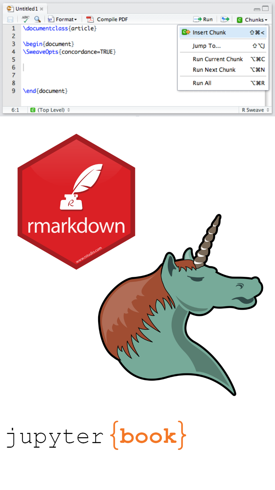
Why a new system?
- At its core, Quarto is multilingual and independent of computational systems
- Has expanded upon R Markdown to add new languages and can add more in the future
Let’s bring R Markdown to everybody!
Why is it called “Quarto”?
“Quarto is the format of a book or
pamphlet produced from full sheets
printed with eight pages of text, four to a
side, then folded twice to produce four leaves.”
— Wikipedia
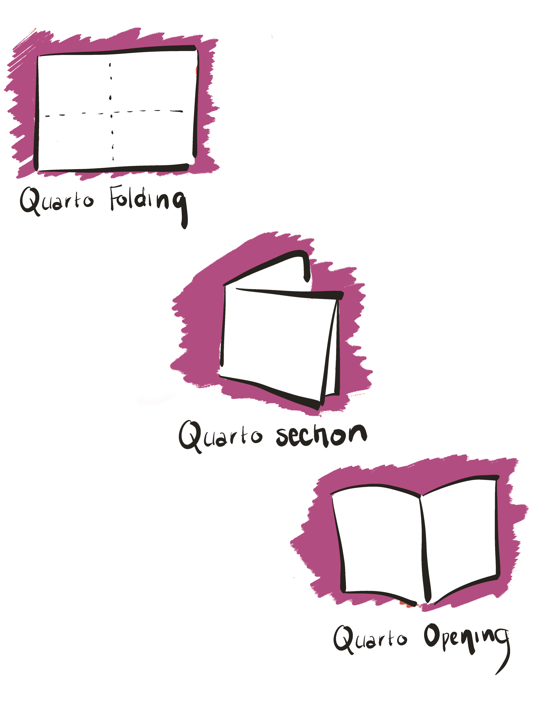
Quarto Formats
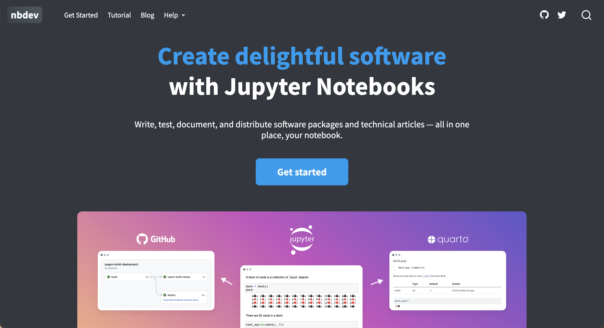
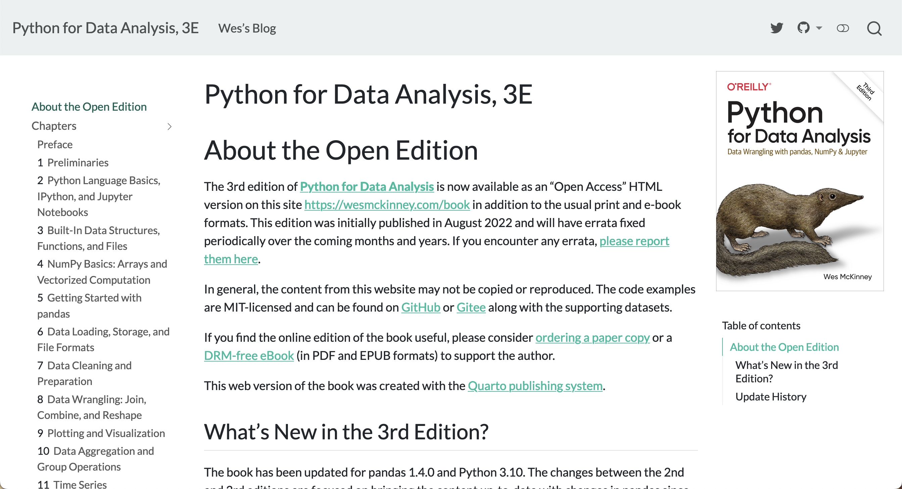
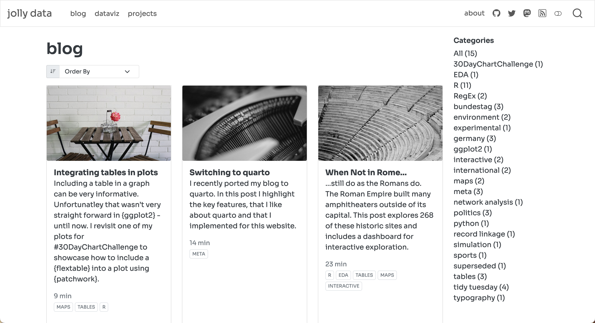

Dr. Alison Hill

Quarto Engines
knitr
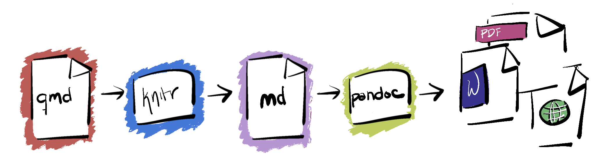knitr
---
title: "ggplot2 demo"
format:
html:
code-fold: true
---
## Meet Quarto
Quarto enables you to weave together content and executable code into a finished document. To learn more about Quarto see <https://quarto.org>.
```{r}
#| label: plot-penguins
#| echo: false
#| message: false
#| warning: false
library(tidyverse)
library(palmerpenguins)
ggplot(penguins,
aes(x = flipper_length_mm, y = bill_length_mm)) +
geom_point(aes(color = species, shape = species)) +
scale_color_manual(values = c("darkorange","purple","cyan4")) +
labs(
title = "Flipper and bill length",
subtitle = "Dimensions for penguins at Palmer Station LTER",
x = "Flipper length (mm)", y = "Bill length (mm)",
color = "Penguin species", shape = "Penguin species"
) +
theme_minimal()
```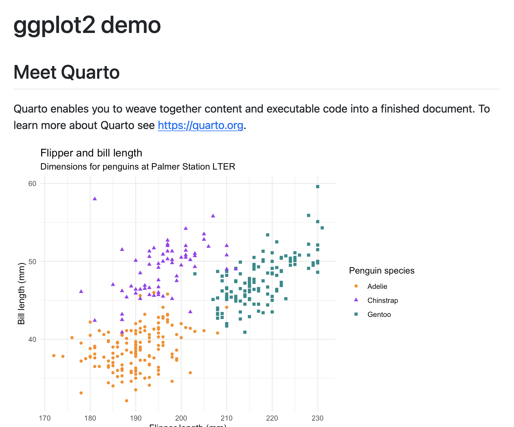
Quarto Engines
Jupyter
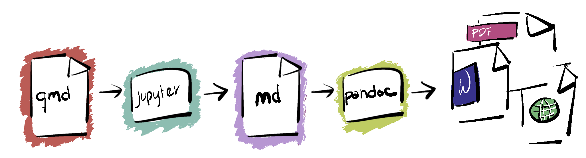Jupyter
---
title: "Palmer Penguins Demo"
format:
html:
code-fold: true
jupyter: python3
---
## Meet Quarto
Quarto enables you to weave together content and executable code into a finished document. To learn more about Quarto see <https://quarto.org>.
```{python}
#| echo: false
#| message: false
import pandas as pd
import seaborn as sns
from palmerpenguins import load_penguins
sns.set_style('whitegrid')
penguins = load_penguins()
g = sns.lmplot(x="flipper_length_mm",
y="body_mass_g",
hue="species",
height=7,
data=penguins,
palette=['#FF8C00','#159090','#A034F0']);
g.set_xlabels('Flipper Length');
g.set_ylabels('Body Mass');
```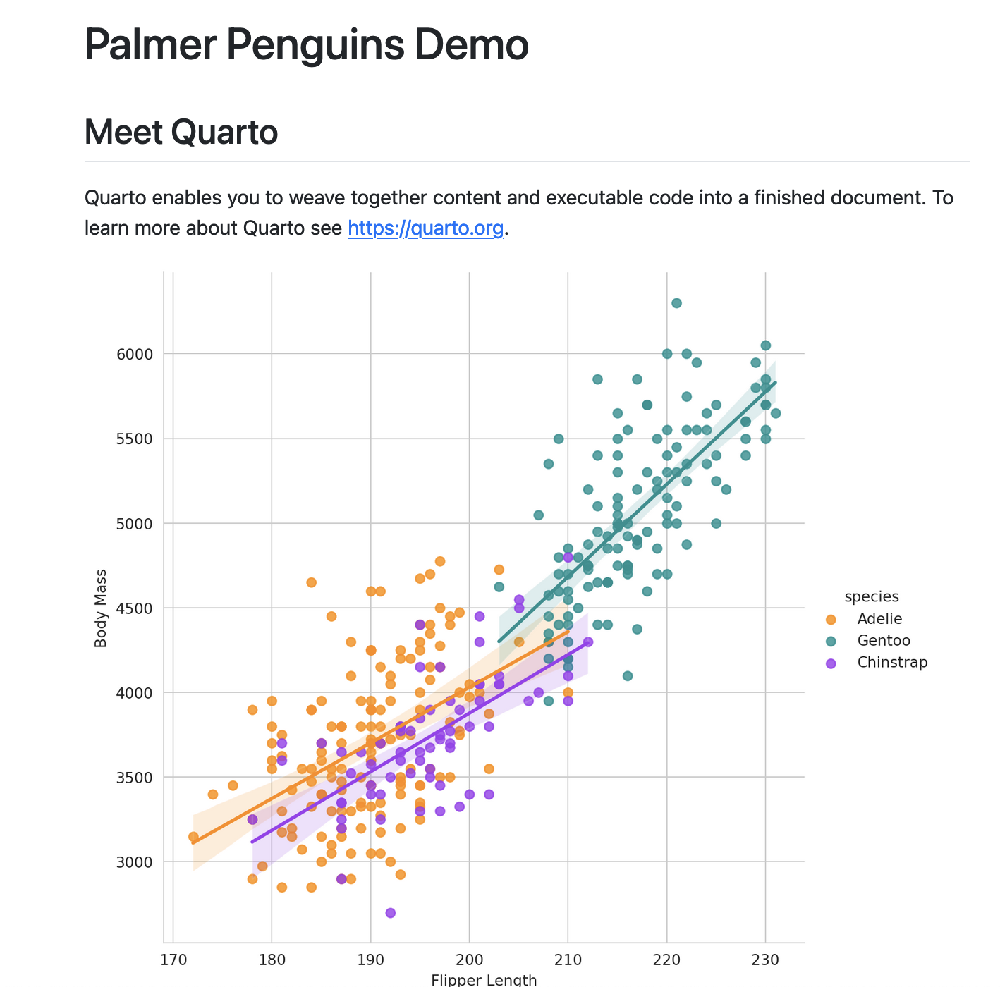
Quarto Engines
Observable JS
- Native support for Observable JS
- Reactive runtime for interactive data analysis
Why Quarto?
A unified ecosystem
- R Markdown has a lot of packages doing lots of different things
- Quarto has a shared expression for core features

Why Quarto?
New features
- Cross references
- Advanced layout
- Figure/layout panels
- Callouts
- Diagrams
- Extensions
- Interactivity
- YAML intelligence
- Publishing
- Conditional content
- Notebook filters
Why Quarto?
Lua-based extension system


How to use Quarto
Agenda
About Quarto
How to use Quarto
Get Started with Quarto
Styling Quarto
Publishing Quarto
Conclusion
Quarto Installation
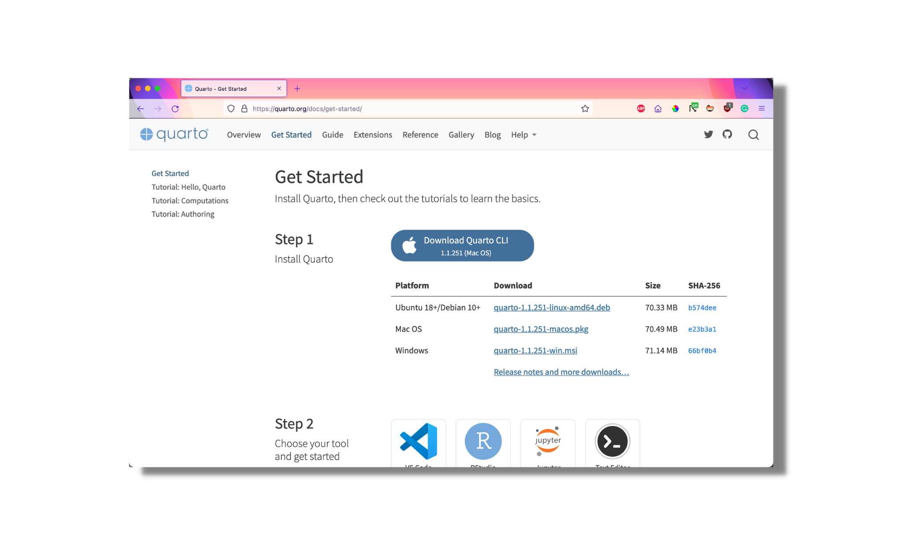
Quarto Tooling


Working in RStudio
Rendering
Use the Render button ( ) in the RStudio IDE to render the file and preview the output with a single click or keyboard shortcut (⇧⌘K).
) in the RStudio IDE to render the file and preview the output with a single click or keyboard shortcut (⇧⌘K).

Automatically render on save by checking the Render on Save option:

YAML Intelligence
YAML code completion is available for project files, YAML front matter, and executable cell options:

If you have incorrect YAML it will also be highlighted when documents are saved:

Let’s try it!
Working with the RStudio Visual Editor

Let’s try it!
Contents of a Quarto Document
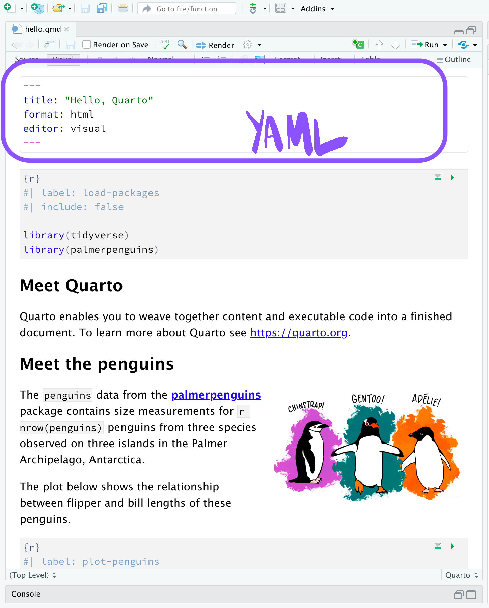
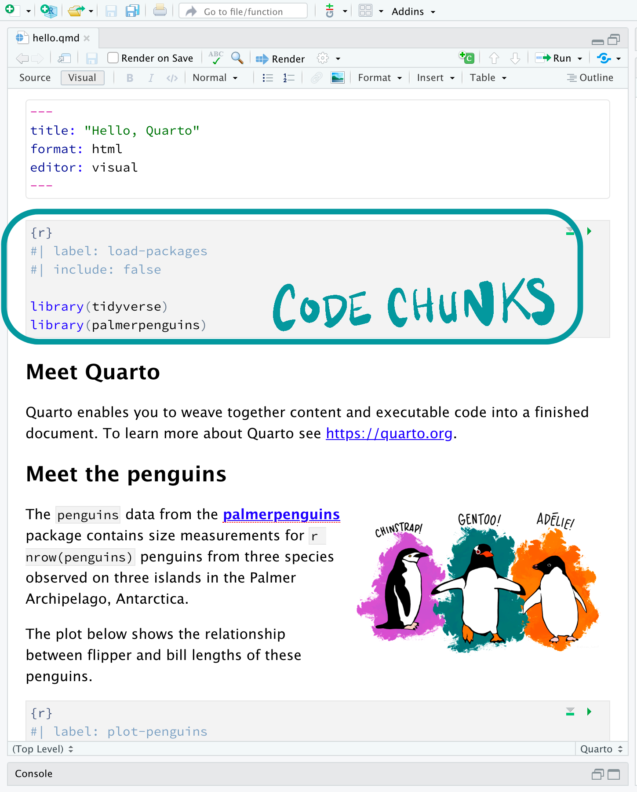
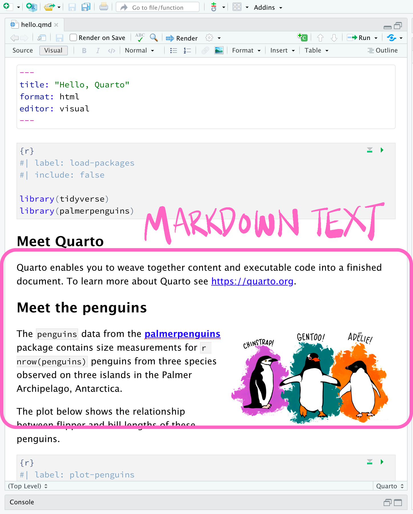
YAML
- “Yet another markup language”
- Metadata of your document
- Demarcated by three dashes (
---) on either end - Uses key-value pairs in the format
key: value
YAML
YAML
---
title: "Penguins, meet Quarto!"
subtitle: "Intro to Quarto Exercise"
format: html
editor: visual
---Let’s try it!
Code Chunks
- Code chunks begin and end with three backticks (usually)
- Code chunks are identified with a programming language in between
{} - Can include optional chunk options, in YAML style, identified by
#|at the beginning of the line
Code Chunks
```{r, label="plot-penguins", warning=FALSE, echo=FALSE}
ggplot(penguins,
aes(x = flipper_length_mm, y = bill_length_mm)) +
geom_point(aes(color = species, shape = species)) +
scale_color_manual(values = c("darkorange","purple","cyan4")) +
labs(
title = "Flipper and bill length",
subtitle = "Dimensions for penguins at Palmer Station LTER",
x = "Flipper length (mm)", y = "Bill length (mm)",
color = "Penguin species", shape = "Penguin species"
) +
theme_minimal()
```Code Chunks
```{r}
#| label: plot-penguins
#| warning: false
#| echo: false
ggplot(penguins,
aes(x = flipper_length_mm, y = bill_length_mm)) +
geom_point(aes(color = species, shape = species)) +
scale_color_manual(values = c("darkorange","purple","cyan4")) +
labs(
title = "Flipper and bill length",
subtitle = "Dimensions for penguins at Palmer Station LTER",
x = "Flipper length (mm)", y = "Bill length (mm)",
color = "Penguin species", shape = "Penguin species"
) +
theme_minimal()
```Code Chunks
```{r}
#| label: plot-penguins
#| warning: false
#| echo: false
#| fig.alt: "Scatterplot with flipper length in millimeters on
#| the x-axis, bill length in millimeters on the y-axis, colored
#| by species, showing a slightly positive relationship with
#| Chinstrap penguins having higher bill length but lower body
#| mass, Adelie with low bill length and low body mass, and
#| Gentoo with high body mass and high bill length."
ggplot(penguins,
aes(x = flipper_length_mm, y = bill_length_mm)) +
geom_point(aes(color = species, shape = species)) +
scale_color_manual(values = c("darkorange","purple","cyan4")) +
labs(
title = "Flipper and bill length",
subtitle = "Dimensions for penguins at Palmer Station LTER",
x = "Flipper length (mm)", y = "Bill length (mm)",
color = "Penguin species", shape = "Penguin species"
) +
theme_minimal()
```Code Chunks

Let’s try it!
Code Chunks
Cross referencing
```{r}
#| label: fig-penguins
#| warning: false
ggplot(penguins,
aes(x = flipper_length_mm, y = bill_length_mm)) +
geom_point(aes(color = species, shape = species)) +
scale_color_manual(values = c("darkorange", "purple", "cyan4")) +
labs(
title = "Flipper and bill length",
subtitle = "Dimensions for penguins at Palmer Station LTER",
x = "Flipper length (mm)",
y = "Bill length (mm)",
color = "Penguin species",
shape = "Penguin species"
) +
theme_minimal()
```See @fig-penguins.Code Chunks
Cross referencing
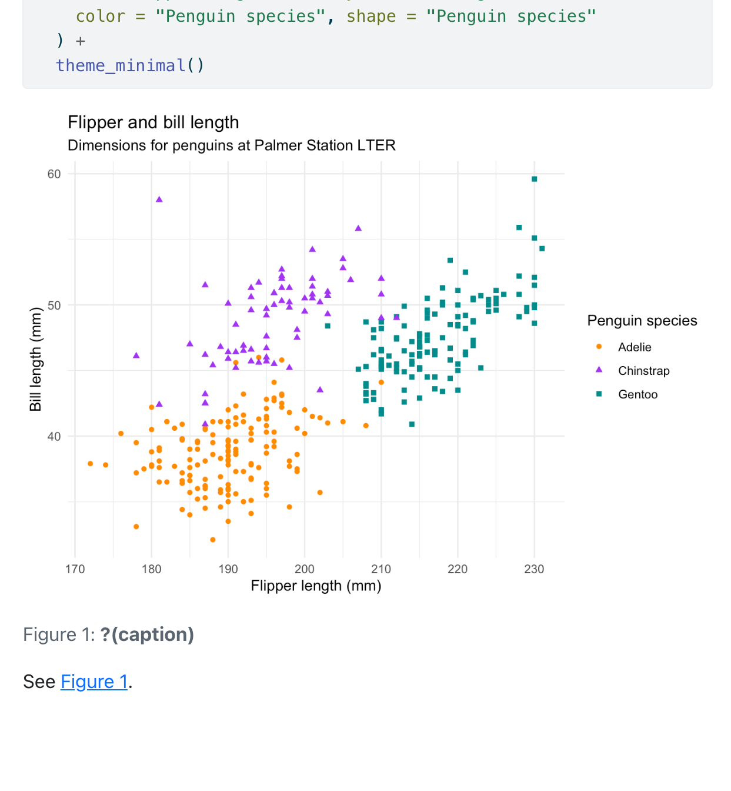Multiple Figures
Put two plots side by side:
Multiple Figures
Put two plots side by side:
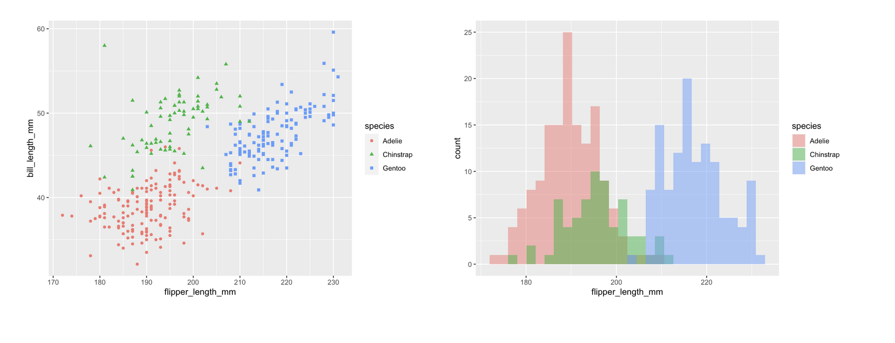Multiple Figures
Put two plots side by side:
Code Options for All Chunks
Use the YAML to control options for all code chunks.
Hide all of the code and just show the output by specifying echo: false within the execute option in the YAML.
Echo
One chunk
```{r}
#| label: plot-penguins
#| echo: false
ggplot(penguins,
aes(x = flipper_length_mm, y = bill_length_mm)) +
geom_point(aes(color = species, shape = species)) +
scale_color_manual(values = c("darkorange","purple","cyan4")) +
labs(
title = "Flipper and bill length",
subtitle = "Dimensions for penguins at Palmer Station LTER",
x = "Flipper length (mm)", y = "Bill length (mm)",
color = "Penguin species", shape = "Penguin species"
) +
theme_minimal()
```Code Options for All Chunks
Code Folding
Code Tools
Code Options for All Chunks
Code Linking
Needs downlit package
Markdown Text
- Markdown is a lightweight language for creating formatted text
- Quarto is based on Pandoc and uses its variation of markdown as its underlying document syntax
Markdown Text
The `penguins` data from the [**palmerpenguins**](https://allisonhorst.github.io/palmerpenguins "palmerpenguins R package") package contains size measurements for `r nrow(penguins)` penguins from three species observed on three islands in the Palmer Archipelago, Antarctica.
The penguins data from the palmerpenguins package contains size measurements for 344 penguins from three species observed on three islands in the Palmer Archipelago, Antarctica.
Markdown Text
Formatting
| Markdown Syntax | Output |
|---|---|
|
italics and bold |
|
superscript2 / subscript2 |
|
|
|
verbatim code |
Markdown Text
Images and Links
| Markdown Syntax | Output |
|---|---|
|
https://quarto.org |
|
Quarto |
|
Markdown Text
Tables
| Right | Left | Default | Center |
|------:|:-----|---------|:------:|
| 12 | 12 | 12 | 12 |
| 123 | 123 | 123 | 123 |
| 1 | 1 | 1 | 1 || Right | Left | Default | Center |
|---|---|---|---|
| 12 | 12 | 12 | 12 |
| 123 | 123 | 123 | 123 |
| 1 | 1 | 1 | 1 |
Markdown Text
Tables
| Right | Left | Default | Center |
|------:|:-----|---------|:------:|
| 12 | 12 | 12 | 12 |
| 123 | 123 | 123 | 123 |
| 1 | 1 | 1 | 1 |
: Table Column Widths {tbl-colwidths="[10,30,30,30]"}| Right | Left | Default | Center |
|---|---|---|---|
| 12 | 12 | 12 | 12 |
| 123 | 123 | 123 | 123 |
| 1 | 1 | 1 | 1 |
. . .
Let’s try it!
Quarto Authoring
Diagrams
Quarto has native support for embedding Mermaid and Graphviz diagrams.
Quarto Authoring
Equations
\[E = mc^{2}\]
Quarto Authoring
Title Banners
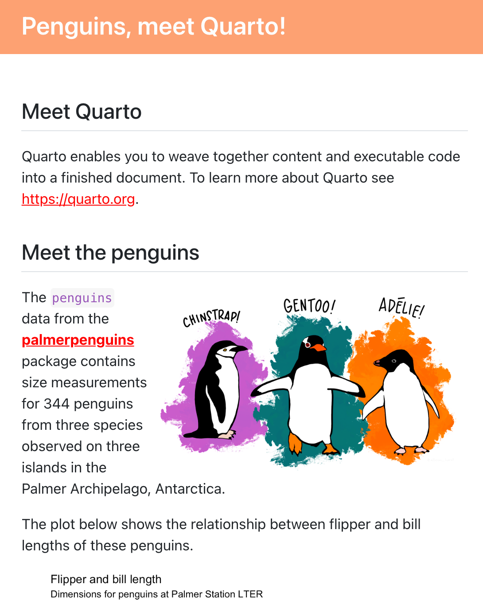
HTML pages rendered with Quarto include a formatted title banner at the start of the article.
Title Banners
Toggle on…
Title Banners
Title Banners
Use a color…
Title Banners
Or a photo!
---
title: "Penguins, meet Quarto!"
title-block-banner: "banner-image.jpg"
format: html
editor: visual
---Let’s try it!
Divs and Spans
You can add classes, attributes, and other identifiers to content using Divs and Spans.
Divs
::: {.border}
This content can be styled with a border
:::Spans
[This is *some text*]{.class key="val"}Divs
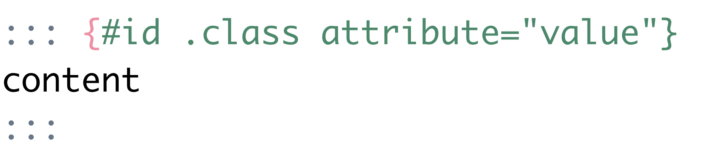:::- Div start and end#id- label.class- behaviorattribute=value- customization
Divs
Callout Blocks
:::{.callout-tip}
Note that there are five types of callouts, including:
`note`, `tip`, `warning`, `caution`, and `important`.
:::. . .
Tip
Note that there are five types of callouts, including: note, tip, warning, caution, and important.
Divs
Callout Blocks
::: {#call1 .callout-note appearance="simple"}
## Pay Attention
Using callouts is an effective way to highlight content that your reader give special consideration or attention.
:::Pay Attention
Using callouts is an effective way to highlight content that your reader give special consideration or attention.
Divs
Callout Blocks
Warning
.callout-warning
Caution
.callout-caution
Important
.callout-important
Divs
Multiple columns
::: {layout-ncol=2}

Photo by <a href="https://unsplash.com/@corneliusventures?utm_source=unsplash&utm_medium=referral&utm_content=creditCopyText">Cornelius Ventures</a> on <a href="https://unsplash.com/s/photos/penguin?utm_source=unsplash&utm_medium=referral&utm_content=creditCopyText">Unsplash</a>
:::. . .
Photo by Cornelius Ventures on Unsplash
Divs
Multiple columns
::: {layout="[[1,1], [1]]"}


:::Divs
Tabsets
Spans
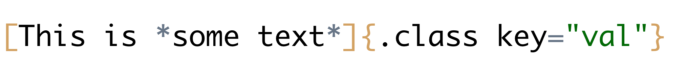[]and{}for span start and end.class- behaviorkey="val"- customization
Spans
. . .
This is text that is red.
Spans
Other formats
You can create Revealjs presentations using the revealjs format.
Let’s try it!
Revealjs
Code Line Numbers
```{r}
#| echo: true
#| eval: FALSE
#| code-line-numbers: 3-4
ggplot(penguins,
aes(x = flipper_length_mm, y = bill_length_mm)) +
geom_point(aes(color = species, shape = species)) +
scale_color_manual(values = c("darkorange","purple","cyan4"))
```Revealjs
Incremental
- Adelie
- Chinstrap
- Gentoo
Get Started with Quarto
Agenda
About Quarto
How to use Quarto
Get Started with Quarto
Styling Quarto
Publishing Quarto
Conclusion
Create a new document
To create a new document in RStudio, go to File > New File > Quarto Document:
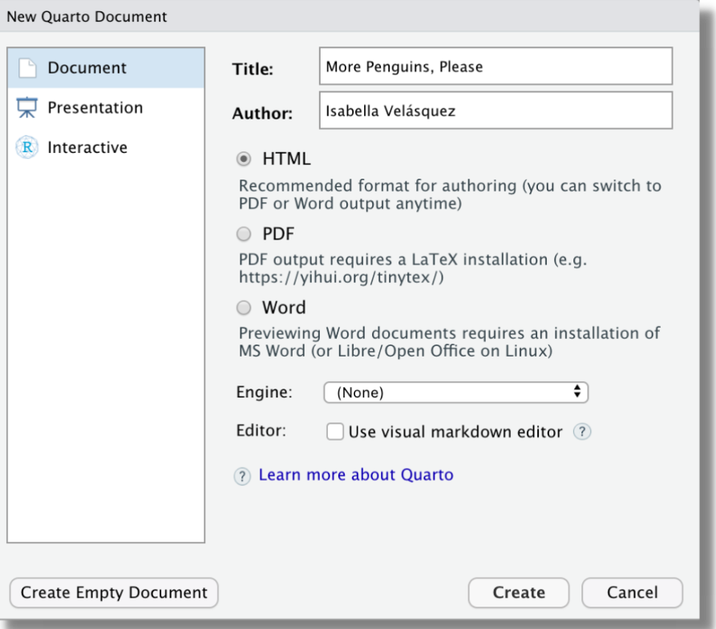Quarto Projects
Quarto projects are directories that provide:
- A way to render all or some of the files in a directory with a single command (e.g.
quarto render myproject). - A way to share YAML configuration across multiple documents.
- The ability to redirect output artifacts to another directory.
- The ability to freeze rendered output (i.e. don’t re-execute documents unless they have changed).
Quarto Projects
Quarto Projects
Freeze
Styling Quarto
Agenda
About Quarto
How to use Quarto
Get Started with Quarto
Styling Quarto
Publishing Quarto
Conclusion
HTML Theming
Quarto includes 25 themes from the Bootswatch project:
- default
- cerulean
- cosmo
- cyborg
- darkly
- flatly
- journal
- litera
- lumen
- lux
- materia
- minty
- morph
- pulse
- quartz
- sandstone
- simplex
- sketchy
- slate
- solar
- spacelab
- superhero
- united
- vapor
- yeti
- zephyr
HTML Theming
Use these themes under the theme option in the YAML:
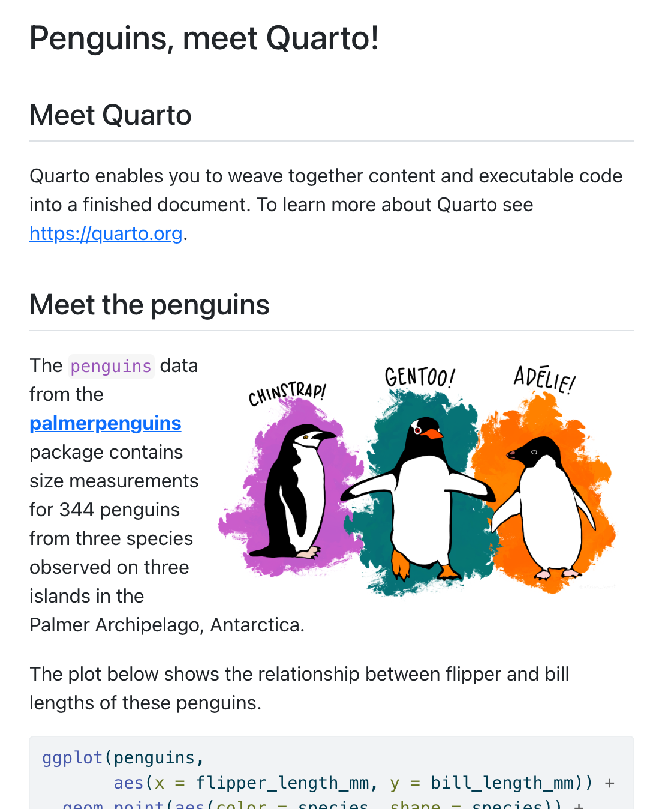
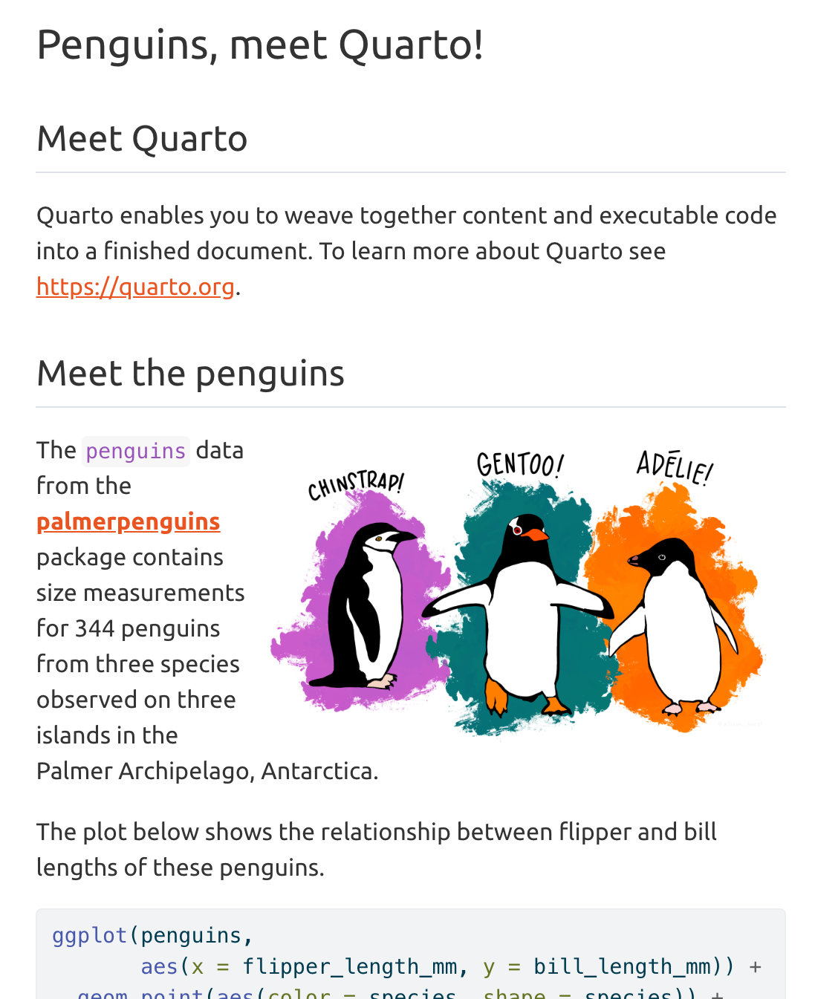
HTML Theming
You can do extensive additional customization using SASS theme files.
- Bootstrap defines over 1,400 variables that control fonts, colors, padding, borders, and much more!
HTML Theming
Provide the custom theme under theme:
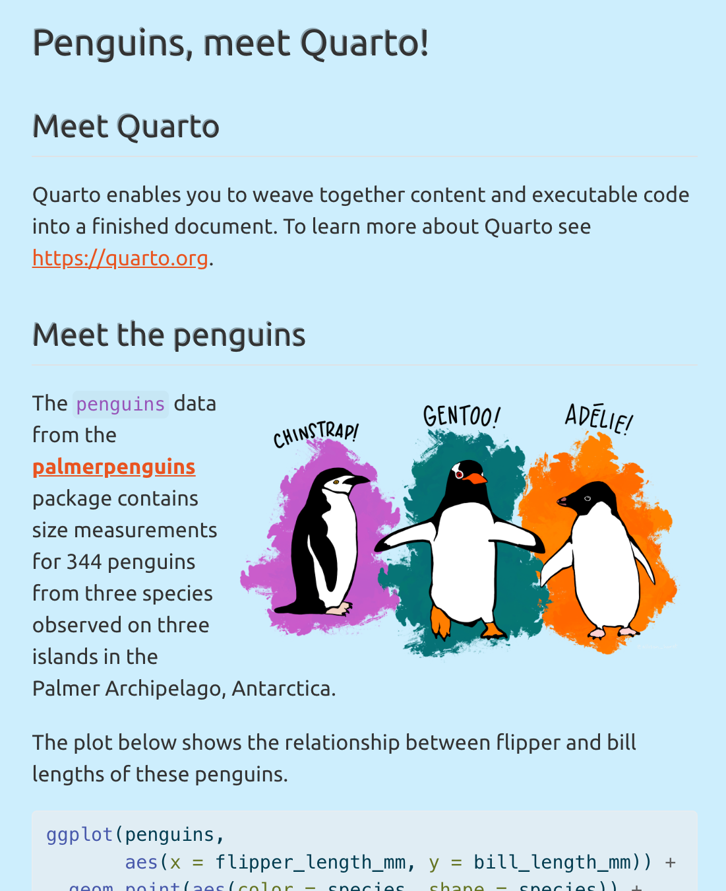
HTML Theming
Quarto also allows you to use a dark and light theme.
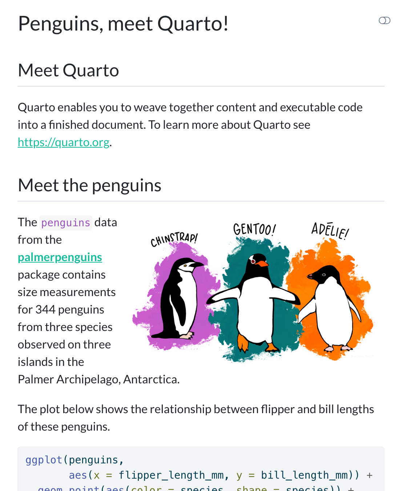
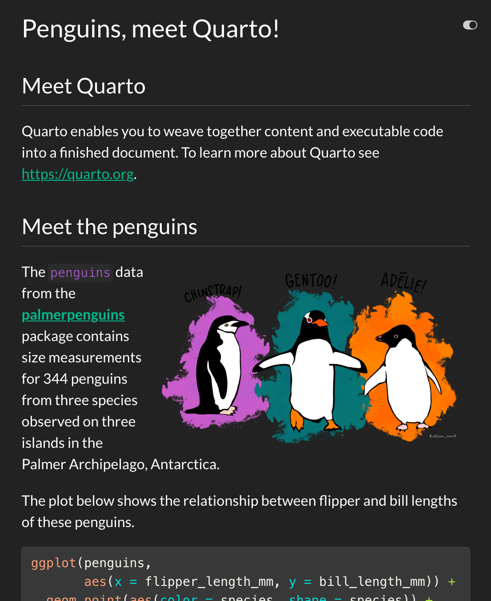
Publishing Quarto
Agenda
About Quarto
How to use Quarto
Get Started with Quarto
Styling Quarto
Publishing Quarto
Conclusion
Publishing options
Since content rendered with Quarto uses standard formats (HTML, PDFs, MS Word, etc.) it can be published anywhere.
Some options:
- Quarto Pub
- GitHub Pages
- RStudio Connect
- Netlify
Quarto Pub
Quarto Pub is a free publishing service for content created with Quarto.
- Must be publicly available
- Cannot be larger than 100 MB
- Has a soft limit of 10 GB a month
Terminal
Let’s try it!
Conclusion
Agenda
About Quarto
How to use Quarto
Get Started with Quarto
Styling Quarto
Publishing Quarto
Conclusion
Thank you!
I hope that you enjoyed this intro to Quarto!
- Read the Quarto documentation.
- Check out Awesome Quarto.
Acknowledgements
- Quarto questions by Marc Dotson
- Improvements in text processing using textrecipes by Emil Hvitfeldt
Quarto in 100 seconds
https://neubert.quarto.pub/intro-to-quarto/